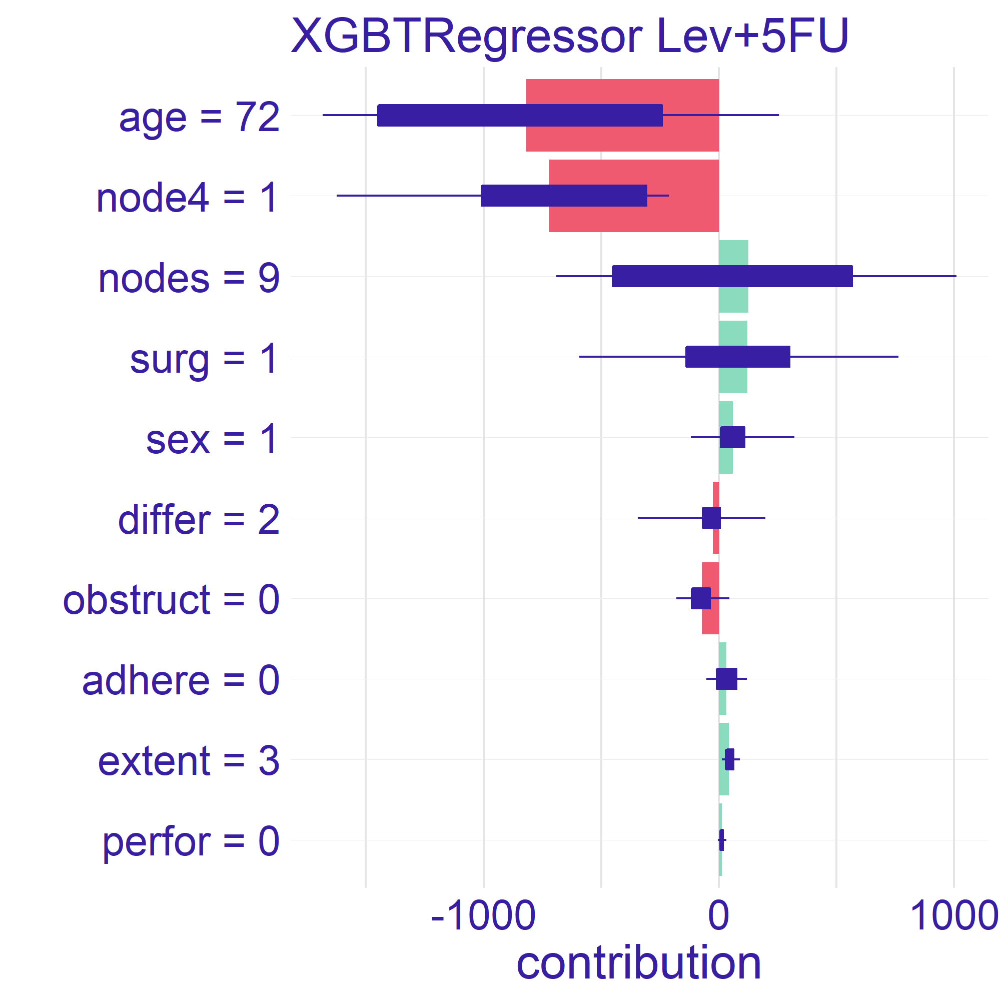
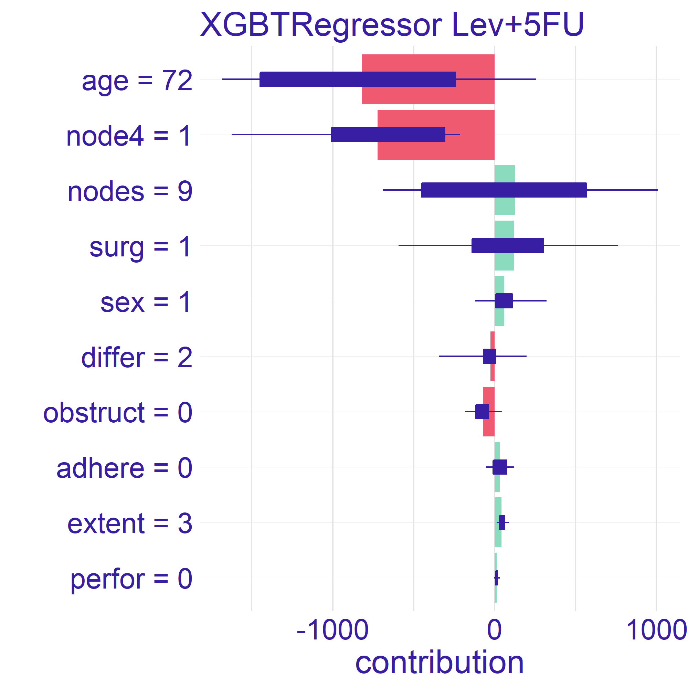

Chapter 4 Story Uplift Modelling: eXplaining colon cancer survival rate after treatment
Authors: Aleksandra Łuczak (Warsaw University of Technology), Tymoteusz Makowski (Warsaw University of Technology), Kateryna Shulikova (Warsaw School of Economics)
Mentors: Miłosz Dobersztyn (McKinsey), Armin Reinert (McKinsey)
4.1 Introduction
We will use data about Chemotherapy for Stage B/C colon cancer from survival package in R. The documentation can be found here, the package can be installed with install.packages("survival") command in R console. After the installation dataset can be accessed via survival::colon command.
4.1.1 What is Uplift Modelling?
For classical algorithms in machine learning it is hard to predict causal impact of the event because they are more suited for predicting the results after an action. In some cases, such as a marketing campaign or medical treatment, that causal impact might be extremely important. Due to the possibility of using two training sets (treatment and control groups) by uplift modeling this problem was solved.
Uplift modeling is one of the techniques or a branch of machine learning that tries to forecast class probability differences between group exposed to some action or therapy and control group (without that action or therapy).
This technique also allows to discover in research those groups of patients for which treatment was most beneficial, so it is commonly used not only in marketing campaigns or medical treatments but also in other customer services.
References:
- Uplift modeling with survival data (Jaroszewicz and Rzepakowski 2014),
- Uplift modeling for clinical trial data (Jaskowski and Jaroszewicz 2012),
- Uplift Modeling for Multiple Treatments with Cost Optimization (Zhao and Harinen 2019),
- Linear regression for uplift modeling (Krzysztof and Jaroszewicz 2018),
- Ensemble methods for uplift modeling (Sołtys, Jaroszewicz, and Rzepakowski 2015).
4.1.2 Dataset Description
We use data from one of the first successful trials of adjuvant chemotherapy for colon cancer. There are two type of treatment:
- Levamisole is a low-toxicity compound previously used to treat worm infestations in animals and its effects on the treatment of colon cancer have been noted;
- 5-FluoroUracyl(FU) is a moderately toxic (as these things go) chemotherapy agent. This is the “strongest” one treatment.
Both of these medications are given after the cancer excision, it’s adjutant chemistry, that means “extra post-operative”.
There are two records per person, one for recurrence and one for death. Dataset contains 1858 observations and 16 features which are described in the 4.1 table.
| Variable | Type | Description |
|---|---|---|
| id | categorical | An id. |
| study | categorical | 1 for all patients. |
| rx | categorical | Treatment: Observation, Levamisole or Levamisole+5-FluoroUracyl. |
| sex | categorical | Patient’s sex: Male or Female. |
| age | continuous | Patient’s age in years. |
| obstruct | binary | Stenosis of the colon by the cancer, which is blockage by the tumor. |
| perfor | binary | Perforation of colon - a flag whether there was a hole in the colon. |
| adhere | binary | Adherence to the surrounding organs (e.g. bladder). |
| nodes | continuous | Number of lymph nodes with detectable cancer i.e. during the operation the lymph nodes that were attacked by the cancer are cut out. For the operation to be successful there should be at least 12 lymph nodes. |
| time | continuous | Days until event or censoring. The time of receiving the treatment is considered to be time = 0, the time that passed in the variable time is the time until death or relapse from receiving the treatment. |
| status | binary | Censoring status. |
| differ | categorical | Differentiation of tumour cell (1=well, 2=moderate, 3=poor). The more the better because it is more like colon cells. |
| extent | categorical | Extent of local spread, what cells did he reach (1=submucosa, 2=muscle, 3=serosa, 4=contiguous structures). The less the better. |
| surg | categorical | Time from surgery to registration (0=short, 1=long). |
| node4 | binary | More than 4 positive lymph nodes. |
| etype | categorical | Event type: 1=recurrence, 2=death. |
Typically, the survival data includes two variables: the observed survival time (time variable in our dataset) and a binary censoring status variable (status variable in our dataset). The status variable indicates whether the event has been observed (typically denoted by status = 1). However, if the event has not been observed (status = 0) then the true survival time has ben censored, i.e. it is only known that the true survival time is at least equal to time (Jaroszewicz and Rzepakowski 2014).
4.1.3 Ideas
There are many ways to use this data:
- prediction of the patient’s life expectancy depending on whether they received treatment or not,
- prediction whether the treatment is effective or not,
- prediction of the life expectancy depending on the medicine administered.
We have decided to focus on the last mentioned approach. There are two approaches for modelling this approach. One of them being classification whether the patient will live longer than given threshold (Jaroszewicz and Rzepakowski 2014) and the second one, on whom we will focus, regression which will yield result by how much the treatment will change the life expectancy.
4.1.4 Why is it worth the hassle?
When a patient learns about the colon cancer disease they usually ask “How much more time do I have left he has left?”. And now what? What is the treatment? The doctor may indicate a number of therapies that may be effective, but still be unable to tell how much time there is left or what’s the patient’s expectancy to live.
The aim of this model is helping to provide more accurate data and answer the patient’s question and how the treatment is going to change their life expectancy.
4.2 Data Preprocessing
We removed columns:
id,study,etype,study- due to the intent of regression modelling of the problem.
The dataset has been divided into:
- X - all features (without time and rx),
- y - target variable (time),
- treatment -
rxvariable.
Distribution of the variable rx is as shown in the 4.2 table. This feature has been categorised.
| Levamisole | Levamisole + 5-FU | Observation |
|---|---|---|
| 620 | 608 | 630 |
4.3 Model
To predict model we used algorithms from the package causalml in Python 3. To optimize hyper parameters we used algorithms from the package hyperopt also in Python 3. All notebooks and codes can be found on GitHub.
The final model is XGBTRegressor with parameters summarised in the 4.3 table.
| Parameter | Value |
|---|---|
| colsample_bytree | 0.8336948571372381 |
| gamma | 0.5564260515876811 |
| learning_rate | 0.9327196556867555 |
| max_depth | 6 |
| min_child_weight | 0.45533158266464746 |
| n_estimators | 200 |
This gives as Average Treatment(Lev) Effect \(74.38\) and Average Treatment(Lev+5-FU) Effect \(185.69\).
The average treatment effect (ATE) is a measure used to compare treatments in randomized experiments, evaluation of medical trials. The ATE measures the difference in mean outcomes between units assigned to the treatment and units assigned to the control. In a randomized trial the average treatment effect can be estimated from a sample using a comparison in mean outcomes for treated and untreated units. The treatment effect for individual \(i\) is given by \(y_{1}(i)-y_{0}(i)=\beta(i)\). In the general case, there is no reason to expect this effect to be constant across individuals. The average treatment effect is given by the equation (4.1).
\[\begin{equation} ATE = \frac{1}{N}\sum_{i}y_{1}(i)-y_{0}(i) \tag{4.1} \end{equation}\]
Where the sum in the (4.1) equation performed over all \(N\) individuals in the population.
4.4 Explanations
4.4.1 Dataset Level Explainations
4.4.2 Instance Level Explainations
For the instance level explainations we have decided to focus on a limited number of observations. These observations are taken from set which seemed to provide interesting results during the data exploration process.
The two observations which we have selected can be found in the 4.4 table.
| sex | age | obstruct | perfor | adhere | nodes | status | differ | extent | surg | node4 | |
|---|---|---|---|---|---|---|---|---|---|---|---|
| 865 | 0 | 68 | 0 | 0 | 1 | 2 | 1 | 1 | 3 | 0 | 0 |
| 983 | 1 | 56 | 0 | 0 | 0 | 4 | 0 | 2 | 3 | 0 | 0 |
Both patients have the same severity of the cancer which is denoted by the extent variable. One of them is a female and the other is male. The older patient’s (age = 68) cancer is adhered to surrounding organs whilst the other’s cancer is not — this is denoted by the adhere variable. Finally, the last difference is in differ variable which is difference between colon cells and cancer cells.
The Explanations plots have been created for both selected observations. For each of the observations there are two different plots. The reason for two different plots is the fact that XGBTRegressor model underneath creates a model for every treatment. Hence we have got one plot for every treatment type there is – in our case Levamisole(Lev) and Levamisole+5-FluoroUracyl(Lev+5FU) – as seen on figures below.
4.4.2.1 Break Down
On the figuresFIGURE 4.1: Break Down plots for patient with id 865. The left plot represents model using Levamisole treatment and the right one represents model using Levamisole+5-FluoroUracyl treatment.

FIGURE 4.2: Break Down plots for patient with id 983. The left plot represents model using Levamisole treatment and the right one represents model using Levamisole+5-FluoroUracyl treatment.
4.4.2.2 LIME

FIGURE 4.3: Lime plots for patient with id 865. The left plot represents model using Levamisole treatment and the right one represents model using Levamisole+5-FluoroUracyl treatment.


FIGURE 4.4: Lime plots for patient with id 983. The left plot represents model using Levamisole treatment and the right one represents model using Levamisole+5-FluoroUracyl treatment.
4.4.2.3 SHAP
The SHAP plots have been created for both selected observations. For each of the observations there are two different plots. The reason for two different plots is the fact that XGBTRegressor model underneath creates a model for every treatment. Hence we have got one plot for every treatment type there is – in our case Lev and Lev+5FU – as seen on figures 4.5 and 4.6.
 

FIGURE 4.5: SHAP plots for patient with id 865. The left plot represents model using Levamisole treatment and the right one represents model using Levamisole+5-FluoroUracyl treatment.


FIGURE 4.6: SHAP plots for patient with id 983. The left plot represents model using Levamisole treatment and the right one represents model using Levamisole+5-FluoroUracyl treatment.
4.5 Summary and Conclusions
References
Jaroszewicz, S., and P. Rzepakowski. 2014. “Uplift Modeling with Survival Data.” In ACM Sigkdd Workshop on Health Informatics (Hi-Kdd’14). New York City, USA.
Jaskowski, Maciej, and Szymon Jaroszewicz. 2012. “Uplift Modeling for Clinical Trial Data.” In.
Krzysztof, Rudaś, and Szymon Jaroszewicz. 2018. “Linear Regression for Uplift Modeling.” Data Min. Knowl. Discov. 32 (5): 1275–1305.
Sołtys, Michał, Szymon Jaroszewicz, and Piotr Rzepakowski. 2015. “Ensemble Methods for Uplift Modeling.” Data Mining and Knowledge Discovery 29 (November). https://doi.org/10.1007/s10618-014-0383-9.
Zhao, Zhenyu, and Totte Harinen. 2019. “Uplift Modeling for Multiple Treatments with Cost Optimization.” http://arxiv.org/abs/1908.05372.